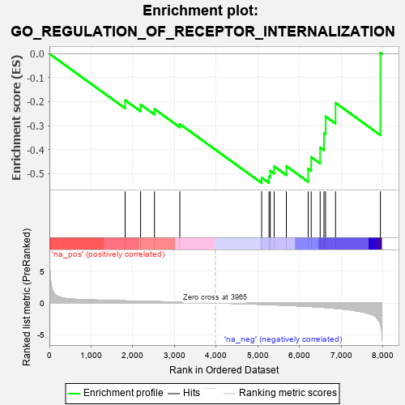

| | | Dataset | 7d |
| Phenotype | NoPhenotypeAvailable |
| Upregulated in class | na_neg |
| GeneSet | GO_REGULATION_OF_RECEPTOR_INTERNALIZATION |
| Enrichment Score (ES) | -0.54004425 |
| Normalized Enrichment Score (NES) | -1.2924345 |
| Nominal p-value | 0.16407356 |
| FDR q-value | 0.4804833 |
| FWER p-Value | 1.0 |
Table: GSEA Results Summary

Fig 1: Enrichment plot: GO_REGULATION_OF_RECEPTOR_INTERNALIZATION
Profile of the Running ES Score & Positions of GeneSet Members on the Rank Ordered List
| PROBE | GENE SYMBOL | GENE_TITLE | RANK IN GENE LIST | RANK METRIC SCORE | RUNNING ES | CORE ENRICHMENT | | 1 | FMR1 | | | 1816 | 0.334 | -0.1941 | No |
| 2 | SYK | | | 2186 | 0.278 | -0.2121 | No |
| 3 | NUMB | | | 2519 | 0.224 | -0.2310 | No |
| 4 | MTMR2 | | | 3126 | 0.133 | -0.2936 | No |
| 5 | DRD2 | | | 5088 | -0.221 | -0.5174 | Yes |
| 6 | PICK1 | | | 5265 | -0.263 | -0.5127 | Yes |
| 7 | MAGI2 | | | 5295 | -0.269 | -0.4888 | Yes |
| 8 | DLG4 | | | 5388 | -0.293 | -0.4705 | Yes |
| 9 | CD63 | | | 5680 | -0.370 | -0.4693 | Yes |
| 10 | INSR | | | 6204 | -0.538 | -0.4801 | Yes |
| 11 | FLOT1 | | | 6276 | -0.564 | -0.4315 | Yes |
| 12 | WDR54 | | | 6491 | -0.658 | -0.3912 | Yes |
| 13 | ARF1 | | | 6583 | -0.701 | -0.3311 | Yes |
| 14 | SCYL2 | | | 6621 | -0.724 | -0.2618 | Yes |
| 15 | AHI1 | | | 6860 | -0.848 | -0.2052 | Yes |
| 16 | ARRB1 | | | 7935 | -3.377 | 0.0045 | Yes |
Table: GSEA details [plain text format]
 Fig 2: GO_REGULATION_OF_RECEPTOR_INTERNALIZATION: Random ES distribution
Fig 2: GO_REGULATION_OF_RECEPTOR_INTERNALIZATION: Random ES distribution
Gene set null distribution of ES for GO_REGULATION_OF_RECEPTOR_INTERNALIZATION